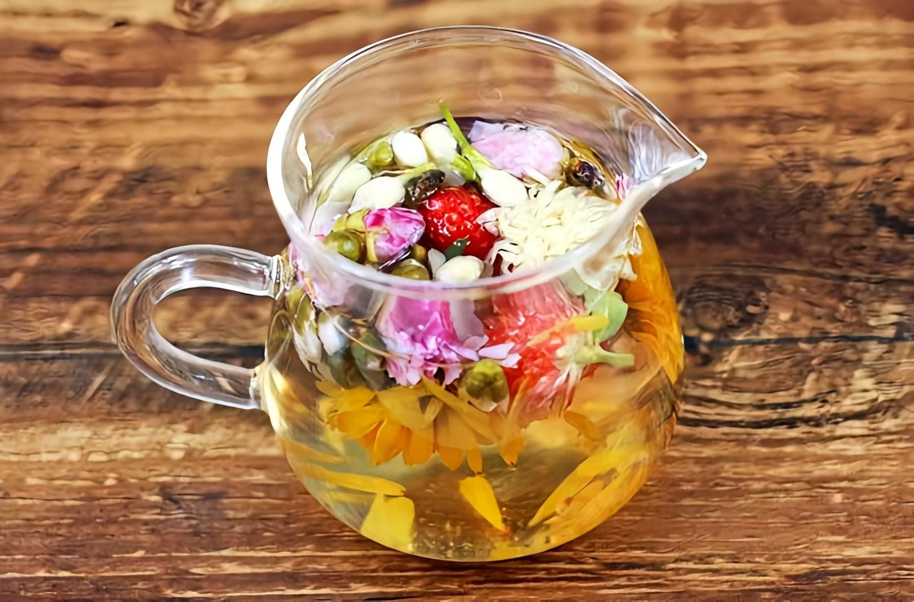

Unwind after a long day with our premium organic calming herbal tea. A time-honored Chinese blend of chamomile, lavender and valerian root creates a gentle, soothing experience that helps you relax and prepare for a restful night.
Natural herbs help you fall asleep faster and sleep deeper
Calming blend eases anxiety and promotes relaxation
Pure, natural ingredients without any additives
Enjoy any time of day without disrupting your sleep
Finding a good calming herbal tea is harder than it looks. We started with 100+ different products available on Amazon, then narrowed them down through a rigorous 3-step testing process that took our team 3 weeks to complete.
After this extensive process, this traditional Chinese herbal tea emerged as the clear winner. It outperformed every other product in terms of ingredient quality, taste and overall value.
We were shocked by how many low-quality products are being sold as "calming herbal tea" on Amazon. Here are the most common issues we discovered that made us reject 90% of the products we tested:
This traditional Chinese herbal tea is one of the very few products that doesn't have any of these issues. It's made from high-quality organic herbs grown in China, has a delicious smooth flavor, and is always fresh.
What makes this tea different from all the others is its authentic Chinese herbal formula that has been refined over centuries. Unlike Western brands that just throw random herbs together, this blend is carefully balanced to create the perfect calming effect.
The herbs are grown in the mountainous regions of China, where the climate and soil are ideal for producing high-quality herbal ingredients. Each batch is carefully harvested and processed to preserve the natural flavors and properties of the herbs.
Brewing this herbal tea correctly is important to get the full flavor and experience. Follow these simple steps for the best results:
Pro Tip: For the best relaxation experience, drink this tea 30-60 minutes before bedtime. Create a peaceful routine by turning off screens and dimming the lights while you enjoy your cup.
Check current price and verified customer reviews on Amazon →
Herbal tea has been an important part of Chinese culture for over 5,000 years. Traditional Chinese medicine uses herbs to help balance the body and promote a sense of well-being.
Chamomile, lavender and valerian root have all been used in Chinese herbalism for centuries for their calming properties. This particular blend combines these three herbs in perfect harmony to create a tea that is both delicious and soothing.
Today, this traditional formula is still made using the same time-honored methods, ensuring that you get the same high-quality experience that people have enjoyed for generations.
A: This tea is grown and produced in the mountainous regions of China, where the climate and soil are ideal for growing high-quality herbs.
A: Yes! This herbal tea contains absolutely no caffeine, making it safe to drink any time of day or night.
A: If you are pregnant, breastfeeding or taking any medications, we recommend consulting with your healthcare provider before consuming any herbal products.
A: Each tea bag is individually wrapped for freshness. Unopened, the tea will stay fresh for up to 2 years from the date of manufacture. Once opened, we recommend using within 6 months.
A: While most people drink this tea plain or with a touch of honey, you can certainly add milk if you prefer. However, we recommend trying it plain first to fully appreciate the delicate herbal flavors.
A: Yes! When you purchase through Amazon, you are covered by Amazon's 30-day return policy. If you are not completely satisfied with your tea, you can return it for a full refund.
A: Yes! This organic calming herbal tea makes a thoughtful and practical gift for anyone who enjoys self-care or needs a little help relaxing. It comes beautifully packaged and is suitable for any occasion.
A: Yes! These tea bags are made from plant-based materials and are completely compostable. The outer packaging is also recyclable.
Skip the low-quality imitations and try the real thing. This traditional Chinese herbal tea is the best calming blend we found on Amazon.
🛒 Buy Now On Amazon - Free Prime Shipping